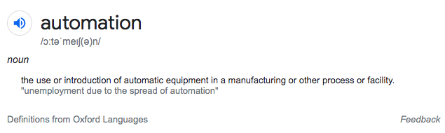
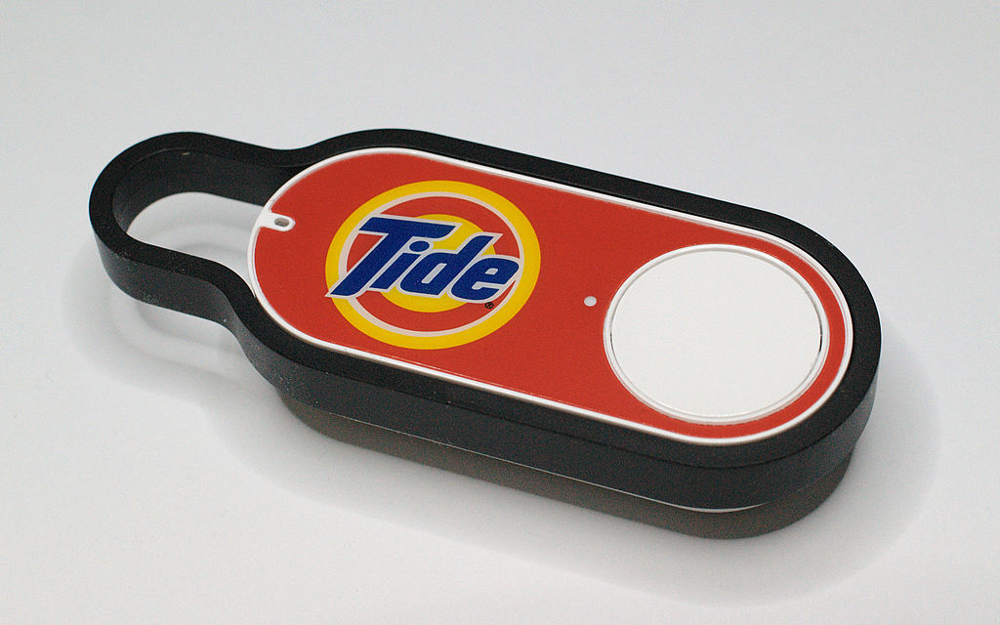
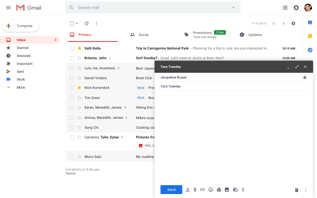
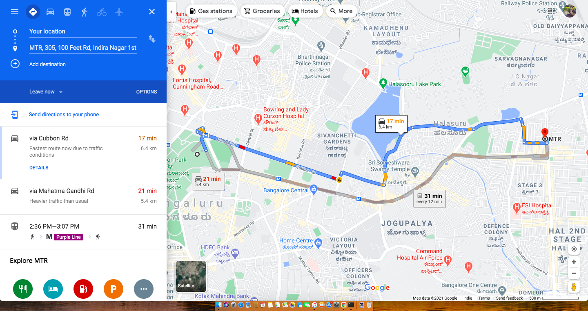

A framework for using automation in product design
This article is an attempt to dissect and explain automation, and to provide a framework on how to use automation during product design.
It’s based on the paper titled, “A Model for Types and Levels of Human Interaction with Automation,” by R Parasuraman et al.
Disagreement with the definition
There are many opinions on automation and its potential negative effects on society, without understanding it fully.
Even the dictionary gets it wrong perceiving it as a binary mode of operation (either 0 or full human replacement).

A basic but apt definition for automation is, performing a process or procedure with minimal human assistance.
From this perspective, even a partial contribution from a system (computer) for a procedure that was done earlier by humans, is also called automation.
It’s just automation at a different scale, as explained in the latter part of this article.
Anatomy of a procedure
Let’s understand how humans perform a procedure before we move to the automation levels (scale).
There are three states in doing a procedure.
- SENSE (information acquisition via the three primarily used senses 👂 👁️ ✋)
- DECIDE (based on the analysis, deciding a set of options)
- ACT (acting on an option after doing the best possible calculation)
Similar to a human, an automated system can follow the same approach:
- SENSE: Collecting information/input
- DECIDE: Deciding on the actions
- ACT: Taking the appropriate action
The only difference is, it might take a gradual approach to operating in each state.
Automation levels
Here is a 10-point scale, on how a system might operate on each of the states (SENSE -> DECIDE -> ACT).

Systems and their automation levels
Let’s take the example of some products (systems) solving for different jobs-to-be-done (JTBD), operating on different scales for each state.
HAL 9000 (2001: A Space Odyssey)
Below is the image from the scene where it decides to rank 10, leveling up from the typical rank of 9 for each state, for the Job of assisting the crew.
From a smart assistant that can do almost everything, it goes on to deny opening the hatch door for Dave who is outside.
Amazon Dash button
Let’s understand it for the Amazon Dash button for the Job of ordering a kitchen item.
- SENSE (0/10, customer needs to give input by pressing a button)
- DECIDE (0/10, customer sets up the configuration on what to order when it’s pressed)
- ACT (7/10, places the order, informs the customer)

Gmail’s smart-compose
Let’s review Gmail’s smart-compose feature for the Job of writing an email (response).
- SENSE (10/10, automatically goes through the email content)
- DECIDE (10/10, automatically makes a decision for the suggestion)
- ACT (0/10, the user needs to accept the suggested words)

Google Maps
Let’s consider Google Maps for the Job of finding the shortest path from A to B.
- SENSE (10 when auto-detecting the location, 0 when the user sets up the location)
- DECIDE (3/10, calculates a few routes based on traffic, transport availability, etc)
- ACT (10/10, shows selected routes)

Application in product design
Using this framework to design or improve an existing product for a given job-to-be-done, starts with asking the question.
“Where is the current experience on the scale presented here, for each of the states?”
And then striving for an experience that is more assistive than the current standards.
Let’s take the job of “Acting on important emails on time when starting the work” and evaluate plain Gmail for it.
Here is how the current process looks like.
- SENSE: Go through new emails (0/10)
- DECIDE: Identify important emails (0/10)
- ACT: Respond or create tasks/events from the important emails (0/10)
Now let’s try to reimagine the experience for the same job.
- For the SENSE state
- Gmail can sense the incoming emails and the respective patterns without taking the user’s help.
Hence we can set this score to 10/10 and move on to the next two states.
- To reimagine the DECIDE state
- We can jump the experience to level 3 by making it select a few important emails. For example, emails where you’re added in a new email by the boss, a question directed to you, use of words ASAP/EOD, etc.
- For the ACT state
We can shift the experience to level 5 by:
- Making Gmail suggest one action for each important email, to be executed with a click. For example, create a new meeting/todo, send an acknowledgment message, etc.
It can even go to level 7 for some cases.